Astroscope
Astroscope
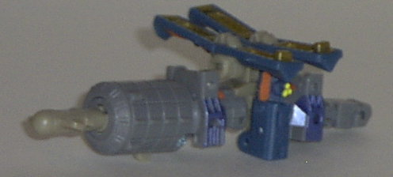 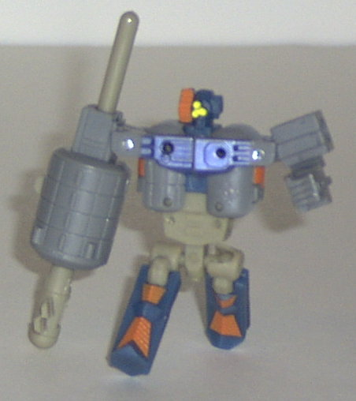
Allegiance : Minicon
Size : Mini-Con
Difficulty of Transformation : Easy
Color Scheme : Gray, flat dark ocean blue, brown-gray, and some yellow, dull gold, metallic blue-gray, and bright orange
Rating : 6.1
(NOTE: Because this set is a repaint, this is not a full-blown review. This mainly covers any changes made to the set and the color scheme, and merely compares them to their original respective sets. For a review on the original Space Minicon Team, go here . For a review on Overload w/ Rollout- the mold that Ultra Magnus & Knockout are based on- go here .)
Astroscope
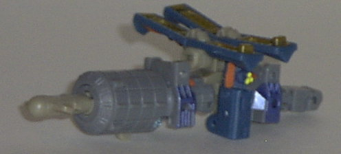
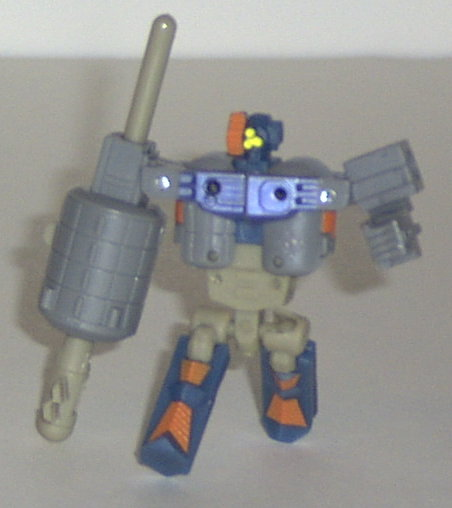
Allegiance
: Minicon
Size
: Mini-Con
Difficulty of Transformation
: Easy
Color Scheme
: Gray, flat dark ocean
blue, brown-gray, and some yellow, dull gold, metallic blue-gray, and bright
orange
Rating
: 6.1
This version of Astroscope
has a bit more varied of a color scheme- and, in fact, one that's probably
more reminiscent of an actual satellite. That's not to say it's better,
however, because although most of the major colors are alright- the gray
and brown-gray- they clash completely with the other prominent color, blue.
The bright orange highlights also don't mesh well at all with the other
dull colors, and just look terrible. In fact, the colors just seem so...
random... on Astroscope, to be honest. Like they originally had a nice
color scheme planned, but they go lazy at the end and just decided to make
Astroscope's blue parts a slightly different shade of blue this time around.
At least the gold paint on the solar panels looks good, but those are only
visible on a small part of his satellite mode. As his color scheme is,
though, it just looks dull and unfinished when compared with the previous
version of Astroscope.
No mold changes have
been made to Energon Astroscope.
Payload
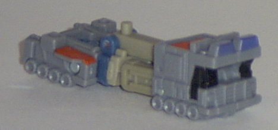
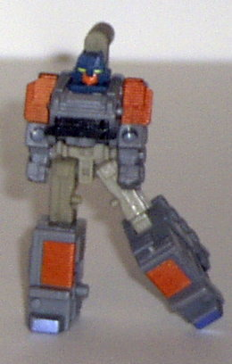
Allegiance
: Minicon
Size
: Mini-Con
Difficulty of Transformation
: Very
Easy
Color Scheme
: Gray, brown-gray,
orange, and some shiny black, bright orange, yellow, metallic blue-gray,
and flat dark ocean blue
Rating
: 4.6
My comments on Energon
Payload are generally the same as they were with Astroscope. The base colors
might be more realistic, but the highlights and the blue just don't fit
at all. And there's actually more of that ugly orange on Payload, and it
looks terrible on his base gray parts, especially in robot mode. There
is less of that dark blue, but the increased amount of the aforementioned
orange paint apps tend to cancel that benefit out. The black pant apps
on his robot chest and front of the vehicle mode look mighty nice, though.
No mold changes have
been made to Energon Payload.
Skyblast
(Minicon)
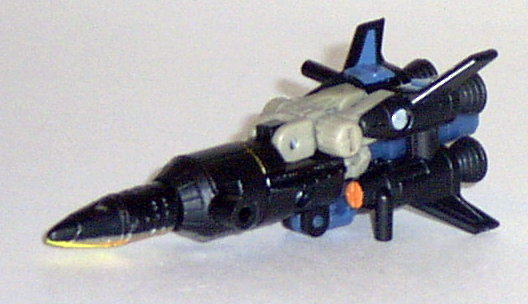
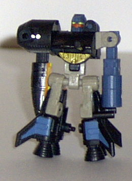
Allegiance
: Minicon
Size
: Mini-Con
Difficulty of Transformation
: Easy
Color Scheme
: Black, brown-gray,
flat dark ocean blue, and some yellow, silver, dull gold, and bright orange
Rating
: 4.7
If it wasn't for the
prominent use of brown-gray, Energon Skyblast (the Minicon, not the
Omnicon
,
which is the subject of another toy review) would have beaten out Armada
Skyblast when it came to the color scheme. But as it is, he falls slightly
short, because the brown-gray doesn't mix with ANY of his other main colors.
The black looks good with the other colors, as does the dark blue; the
brown-gray seems just randomly thrown in, and doesn't fit in with Skyblast's
otherwise dark color scheme. The black goes very well with the dark blue,
though, and the gold and silver highlights are also cool. I'm not sure
why there's yellow, silver, and orange stripes underneath the nose of the
vehicle mode, though. Are they supposed to be "re-entry burn marks"? If
so, they look pretty odd, and probably shouldn't have been put in. Those
three colors in that small of a space just doesn't look good.
No mold changes have
been made to Energon Skyblast.
Requiem
Blaster (Gestalt form of the Space Minicon Team)
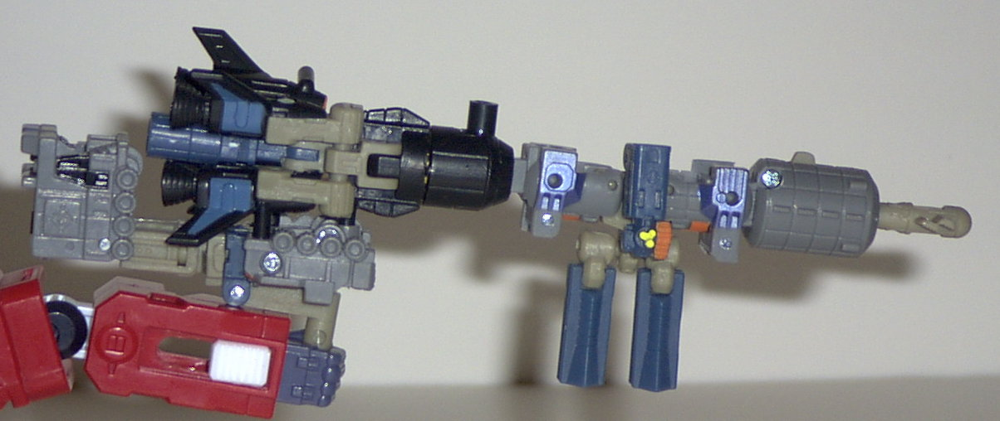
Difficulty of Transformation
: Easy
Color Scheme
: Black, brown-gray,
dark flat ocean blue, gray, and some yellow, silver, dull gold, bright
orange, orange, metallic blue-gray, and shiny black
Rating
: 5.7
My comments on the Energon
version of the Requiem Blaster is pretty much an amalgamation of my comments
on the individual Space Minicon Team Minicons. Gray may be a bit more realistic
of a color for a blaster than the blue of the Armada version, but too many
of the colors- namely, the orange, the brown-gray on Skyblast's portion,
and the dark blue- just don't go together at all. It just looks like the
coloring team threw darts at a board to pick out what colors they were
going to use for the team this time. Speaking as a set, it's also rather
odd that the Minicons who form the Requiem Blaster came with Ultra Magnus,
since they're the only combined Minicon weapon that Magnus can't hold in
his hands.
Knockout
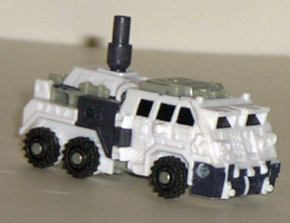
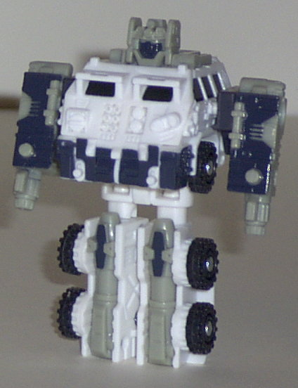
Allegiance
: Minicon
Size
: Mini-Con
Difficulty of Transformation
: Very
Easy
Color Scheme
: White, light gray,
and some bluish black and shiny black
Rating
: 3.8
Knockout's color scheme
seems to suit this mold quite a bit better than his predecessor Rollout's
did, even though Rollout's scheme wasn't necessarily bad. The white, gray,
and black go together very well, and although those three colors comprise
Knockout's entire color scheme, there's enough paint apps where you really
don't notice. In fact, the amount of paint apps on Knockout seems to be
greatly increased when compared to Rollout, and it's not at the expense
of any of the paint apps of any other Transformers in this set, either.
I wish the bluish black was more of a solid color of black, but it's not
TOO bad when used as a secondary color. One oddity, though- Knockout's
face is painted, but his eyes aren't. I kinda wish it was the other way
around... But still, a nice repaint.
No mold changes have
been made to Knockout. Which means he still has those legs that snap off
too easily.
 Ultra
Magnus
Ultra
Magnus
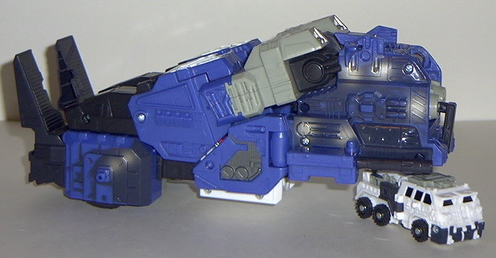
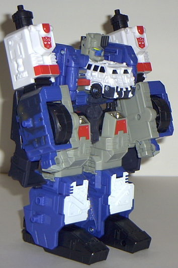
Allegiance
: Autobot
Size
: Mega (comes in an Ultra-priced
giftset with the other four Minicons)
Difficulty of Transformation
: Medium
Color Scheme
: Blue, white, light
gray, bluish black, shiny black, and some light red, silver, gunmetal silver,
yellow, and dull gold
Powerlinx ports
: 6
Rating
: 8.9
Energon Ultra Magnus'
color scheme is a very sizable improvement over his predecessor Overload's.
For one, the blue is definitely a better main color than light red. Ultra
Magnus also has a much greater variety of colors than Overload did, especially
in vehicle mode. Black and silver "battle damage" scars his vehicle mode
parts all over the front sides and rear, and it looks GREAT. Ultra Magnus
also has a ton ton TON of paint apps, and it makes his robot mode looks
like a work of art. Literally. The red, white, gunmetal silver, black....
it all fits together wonderfully. Even the bluish black, which I normally
have a problem with, looks alright on Ultra Magnus, since he's already
mostly blue. I literally wouldn't change a thing on Ultra Magnus' color
scheme. It's astounding.
No mold changes have
been made to Energon Ultra Magnus.
Although the Space Minicon Team that he comes with is a bit lackluster, Ultra Magnus is cool enough to be worth the price of admission all by himself. He just looks so COOL. The only thing that's keeping him from reaching the "must-buy" rating of 9.0 or above is that he only has bare-bones articulation. Still, a recommended buy if you're not a stickler for articulation (and if you're lucky enough to find it- it's a rather rare find.)
Review by Beastbot